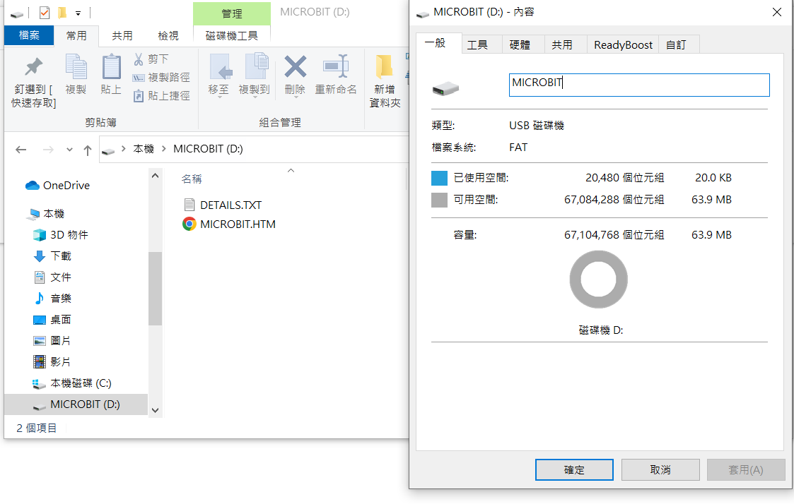
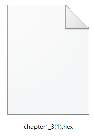
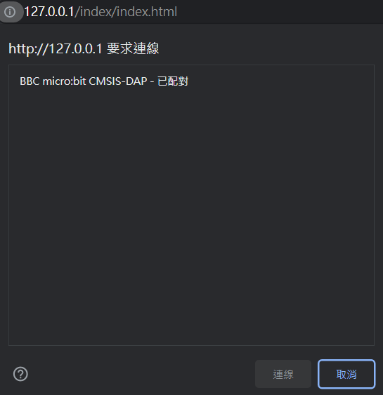

Miaruko
こんにちは～ミアルコです～
歡迎回來第三節課堂～
Micro:bit基本顯示講解(一)
>
前回我們在Makecode網址編寫
了閃爍的心程式，這次我們嘗試
把程式放進Micro:bit主版上～
>
請同學準備一塊microbit主板、一
條USB數據線,還有一台電腦，然後
把Micro:bit連接到電腦上～
>
因為時間關係我已經把程式放
在這裡，請點擊文件並且放進
Micro:bit主版硬碟上。
>
 
如果成功將程式放到Micro:bit主
版硬碟上的話，你應該會看到愛心
圖案在閃耀。如上圖一樣。
>
如果失敗的話請檢查電腦是否已經
連接Micro:bit主版上，或者手動
更新主版Firmware。
>
Micro:bit Firmware固件下載網
還是失敗的話應該係"你個嘢壞咗"
請重新買一塊新的主版繼續遊戲
>
沒有問題我們就繼續課堂～
>
有留意到左上角有兩個按鈕嘛？
左邊按鈕是連接Micro:bit主版，
右邊按鈕是測試Micro:bit主版。
>
請按下左邊按鈕連接Micro:bit主版
到遊戲上，因為後續關卡將會要求同
學們使用主版進行遊戲～
>

如果成功連接Micro:bit主版，上面
將會顯示你Micro:bit主版的硬體
資料。
ProductID：
Null
VendorID：
Null
Product Name：
Null
。。。。。。
我還沒有接收到你Micro:bit主版
的資料，請按下左邊按鈕連接Micro:bit
主版到遊戲上。
聽話，讓我看看！！！
看來你不願意合作
那麼讓我們享受這無盡的寂靜吧
說笑的啦，重新下載文件重新來過吧～
はい，已經接收到你的Micro:bit
以上是已連接Micro:bit的硬體資料。
>
不但是Micro:bit基本硬體資料，
甚至Micro:bit的各種感測值，我
也能夠實時提取喔～
>
以上是我可以接收的數據例子，
你可以測試一下數據是否準確，
例如反轉Microbit測試光感值。
>
我們來個小測試吧，你試試把
光線感測值變為0，然後維持5秒
1
1，2
1，2，3
1，2，3，4
1，2，3，4，5
哦哦？看來你已經掌握到技巧？
>
現在你試試連續5秒晃動
Micro:bit主板
1
1，2
1，2，3
1，2，3，4
1，2，3，4，5
嗯嗯～這速度剛剛好～
>
光線感測值：
Null
溫度感測值(度)：
Null
加速度感測值(z)：
Null
旋轉感測值(度)：
Null
是否正在晃動：
Null